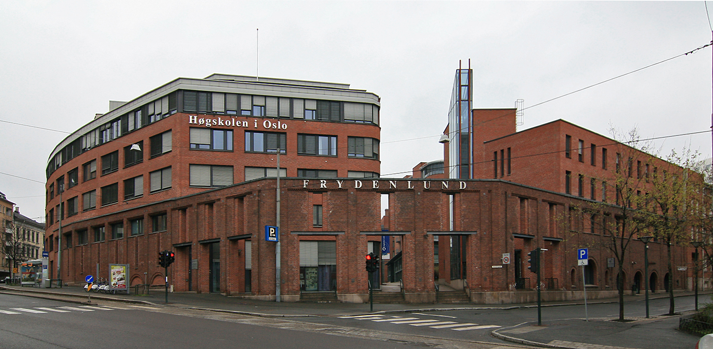

Høgskolen i Oslo og Akershus
Bilde av HIOA i oslo
Høgskolen i Oslo og Akershus (HiOA) er en norsk statlig høgskole, etablert 1. august 2011 gjennom sammenslåing av Høgskolen i Oslo og Høgskolen i Akershus. HiOA er den største høgskolen i Norge med 17 000 studenter og 1 600 ansatte. Styrene ved HiO og HiAk vedtok 9. desember 2010 å støtte en fusjon av de to institusjonene. Regjeringen vedtok sammenslåing 21. januar 2011, med virkning fra 1. august samme år. 20. september 2013 vedtok regjeringen at HiOA skulle slås sammen med Arbeidsforskningsinstituttet (AFI) og Norsk institutt for forskning om oppvekst, velferd og aldring (NOVA) fra 1. januar 2014.
Westerdals Oslo ACT (NITH)

Bilde av Galleriet i oslo, hvor NITH ligger.